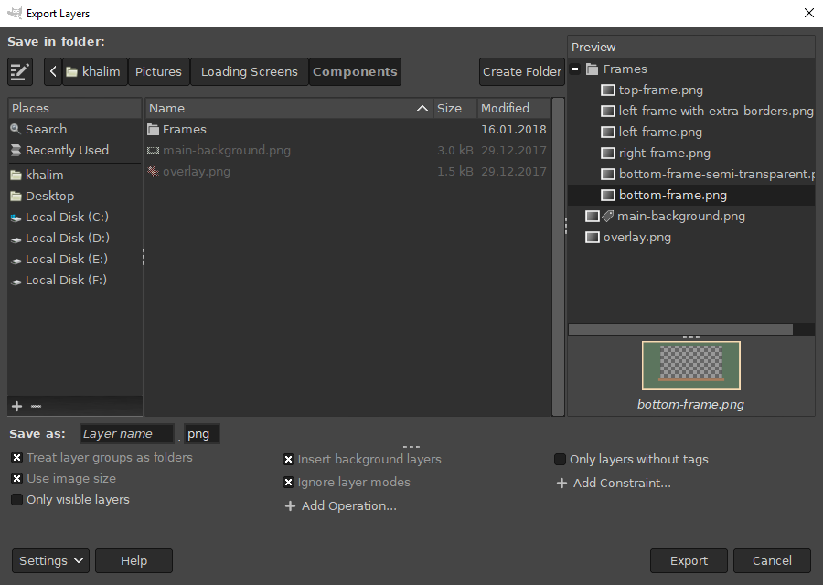

Advanced Usage
Dialog
If you wish to further customize the export beyond the basic features of Export Layers, you can do so in the “advanced” version of the main dialog. To show the advanced dialog, press the “Settings” button and choose “Show More Settings”.

The advanced dialog allows you, among other things, to customize the layer name, add operations executed before the export of each layer and add constraints to exclude specific layers.
You can adjust the height of the bottom pane (between the file extension and the buttons to add operations/constraints) and the width of the pane between the folder chooser and the preview.
Preview
Because the number of operations and constraints can get overwhelming, the preview can help you by showing how the layers will be exported.
The upper part of the preview displays the names of layers to be exported (“layer name preview”), along with their folder structure if “Treat layer groups as folders” is enabled.
If you select a layer in the layer name preview, the layer contents are displayed below (“contents preview”). You can also adjust the height of the contents preview by dragging the upper edge of the contents preview.
Customizing Layer Names
The text entry next to “Save as” lets you customize the filenames. Layer names are used by default.
There are several built-in “fields” that you can combine to form a filename pattern. For example, “image[001]” renames the layers to “image001”, “image002” and so on.
The preview automatically updates as you change the filename pattern and so can greatly help you figure out how your specified pattern affects the layer names.
Fields must be enclosed in square brackets and must have a correct number of arguments. If you place the text cursor inside a field, a corresponding tooltip above the text entry shows you the name and the number of possible arguments.
Arguments must be separated by commas. Arguments in italic are optional. Arguments with slashes indicates a single choice of one of the specified values. Invalid arguments result in the field being inserted literally.
Available fields
You can choose the fields from the dropdown list displayed when clicking on the text entry or you can type the fields manually.
[number]
A number incrementing for each layer.
The numbering is separate for each layer group if “Treat layer groups as folders” is enabled.
Examples:
- [1] → 1, 2, …
- [001] → 001, 002, …, 009, 010, …, 999, 1000, …
- [005] → 005, 006, …
[layer name]
The layer name.
Arguments:
- “keep extension”: If a layer has a recognized file extension, don’t remove it.
- “keep only identical extension”: If a layer has a recognized file extension and it matches the extension in the “File extension” text entry, don’t remove it.
[image name]
The current image name.
Arguments:
- “keep extension”: Do not remove the file extension of the image if it has one.
[layer path]
The “full path” of a layer. For example, if the image has a layer group named “Frames” and the layer group has a layer named “Top”, the path for the layer will be “Frames-Top”.
Arguments:
- path separator: A string that separates the path components. Defaults to “-“.
- wrapper: A string that wraps around each path component. The wrapper must contain “$$” (denoting the name of the current path component). By default, no wrapper is used.
Examples:
- Suppose that a layer has the following path: Frames, Outer, bottom.
- [layer path] → Frames-Outer-bottom
- [layer path, _] → Frames_Outer_bottom
- [layer path, _, ($$)] → (Frames)_(Outer)_(bottom)
[tags]
All tags of a layer. By default, tags are inserted in the following format: “[tag1] [tag2] …”
Tags are inserted in alphabetical order. See Tagging Layers for information about layer tags.
Arguments:
- if there are two arguments and the second argument contains “$$”, then the first argument is a separator between tags and the second argument acts as a “wrapper” around the tag name.
- specific tags: tag names as comma-separated arguments. If omitted, all tags are inserted.
Examples:
- Suppose that a layer has the following tags: Background, Foreground, frames.
- [tags] → [Background] [Foreground] [frames]
- [tags, Background, Foreground] → [Background] [Foreground]
- [tags, _, ($$)] → (Background)_(Foreground)_(frames)
- [tags, _, ($$), Background, Foreground] → (Background)_(Foreground)
[current date]
The current date.
Arguments:
- date format: Date format as per the
Python
strftimeformat. Defaults to “%Y-%m-%d” (year-month-day).
Inserting reserved characters in arguments
To insert a literal space, comma or square brackets (“[” and “]”) in an argument, enclose the argument with square brackets. Literal square brackets must be doubled.
If the last argument is enclosed in square brackets, leave a single space between the last and the second to last closing square bracket.
Examples:
- [layer path, [ ], $$]
- [layer path, [ ] ]
- [layer path, [,], [[[$$]]] ]
Additional Operations
To add custom operations before the export of each layer, press the “Add Operation…” button and select one of the operations described below.
Insert background layers
Insert layers tagged with “Background” as background for each layer. To set a layer as a background layer, see Tagging Layers. Note that even background layers get exported - to prevent this behavior, enable the “Only layers without tags” constraint.
Insert foreground layers
Insert layers tagged with “Foreground” as foreground for each layer. See the “Insert background layers” setting for more information.
Inherit transparency from layer groups
Combine opacity from all parent layer groups for each layer. This corresponds to how the layer is actually displayed in the image canvas.
For example, if a layer has 50% opacity and its parent group also has 50% opacity, the resulting opacity of the exported layer will be 25%.
Ignore layer modes
Set the layer mode of each layer to “Normal”. Among other uses, this may be necessary for layers with different modes that “vanish” if background or foreground is inserted.
Autocrop
Automatically crop each layer.
Autocrop background
Automatically crop the background formed by layers tagged with “Background”. Note that autocrop is performed on the entire background, not on the background layers individually.
Autocrop foreground
Same as “Autocrop background”, but works on the foreground layers instead.
Use file extensions in layer names
If a layer has a recognized file extension, use that file extension instead of the file extension in the “File extension” text entry.
Additional Constraints
To include or exclude layers according to specific criteria, press the “Add Constraint…” button and select one of the constraints described below.
Include layers
Export all layers that are not groups. This is enabled by default.
Include layer groups
Export all layer groups.
Include empty layer groups
Create subfolders for empty layer groups.
Only layers with tags
Export only layers with tags. See Tagging Layers for information about tags.
Only layers without tags
Export only layers with no tags. See Tagging Layers for information about tags.
Only top-level layers
Export only layers at the top of the layer tree (i.e. do not export layers inside any layer group).
Only layers selected in preview
Export only layers selected in the layer name preview. If you save settings, the selection is saved as well.
Tagging Layers
Tags attached to layers allow you to customize each layer individually. To attach a tag to one or more layers, select them in the layer name preview, right-click on the selection and choose your tag. Tagged layers are indicated with a tag icon in the preview.
Adding or removing tags modifies the current image. Save the image to keep the tags permanently.
Currently, Export Layers recognizes only “Background” and “Foreground” tags during processing. However, you can still add custom tags if desired - right-click anywhere on the layer name preview, select “Add tag…” and name your new tag. You can then add the tag to any layer.
To remove custom tags, you must first remove them from all layers, then right-click anywhere on the layer name preview, select “Remove tag…” and select the tag you wish to remove.